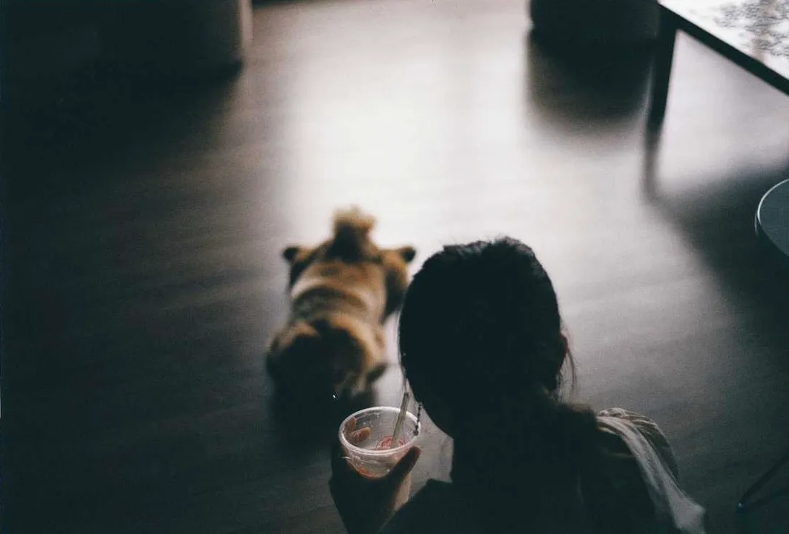
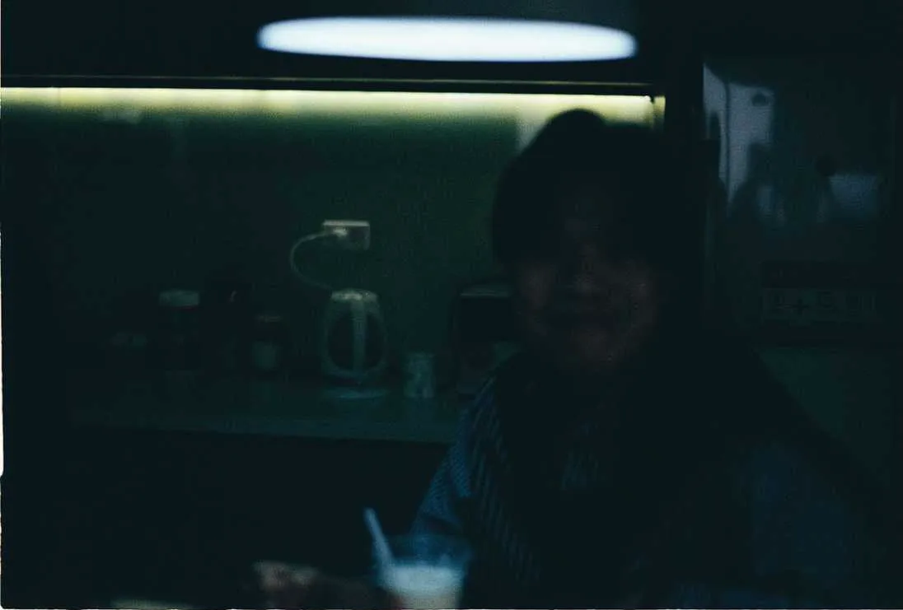
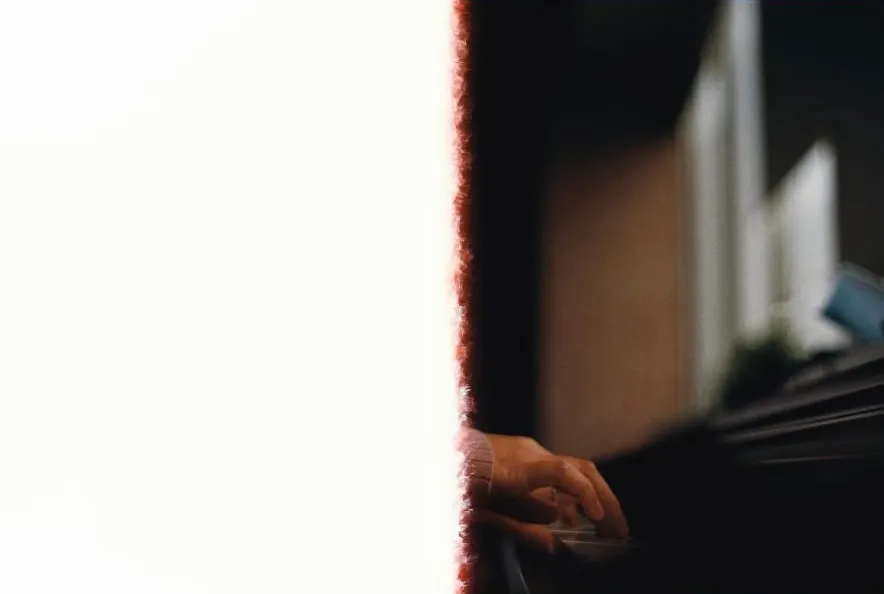

The First Film Scan
By Huy Quang Vũ |I have a deep love for film photography. The texture of the grain and the unique colors produced by film never fail to give me goosebumps. My journey into film photography began in 2021 when a colleague introduced me to their camera. Since then, I've been capturing countless moments on film. Every time I drop off a roll at the lab, head home, and anticipate the results, I experience the same growing excitement as the day of scanning approaches. It's a mix of nerves and anticipation that never fails to stir within me.
However, the excitement and nervousness I felt were even more intense the first time I eagerly awaited the outcome of my very first film roll. The reason behind this heightened emotion is quite simple: it was an absolute mess.
Initially, my colleague took the time to impart some fundamental photography knowledge to me, covering topics like ISO, shutter speed, and aperture. I must admit, at the outset, I didn't grasp much of what he was explaining. Consequently, he recommended that I download a light meter app on my phone, which made my life significantly easier. Armed with this app, I ventured into the resting room with his camera and configured it based on the settings the app recommended. That's when I began capturing images, and to my delight, the photos turned out great at this stage. It brought me immense happiness.
Unfortunately, my initial happiness didn't last long, as I soon began to encounter challenges. Life in the realm of film photography wasn't easy, particularly for someone as adventurous as myself. After successfully taking quality photos with the help of the meter app, I started yearning to become more proficient and decided to set aside the app. I relied on my instincts to guide me on adjusting the camera settings, but it turned out my instincts were far from reliable. Even to this day, my instincts in this regard are often quite poor.
I recall one incident when I sent some film rolls to the lab for development, and they informed me that certain photos were either severely overexposed or underexposed, making it impossible for them to produce clear results. The photo you see above was among the least underexposed ones that they were able to return to me. It was a frustrating setback in my photographic journey.
I made yet another mistake when I repeatedly opened the back of the film camera. It became a habit until another colleague cautioned me against doing it, explaining that opening the camera back would expose the film to light and potentially ruin the entire roll. Thankfully, the damage was limited, and only a few photos were "too overexposed" as a result. Surprisingly, the other photos developed some unique and unexpected exposing effects, which, in a way, added a distinctive charm to them.
All in all, it wasn't a major failure. I still managed to capture some fantastic photos that I could proudly share on my Instagram. This experience allowed me to develop a deep appreciation for this incredible form of photography, which perfectly resonates with my indie spirit and my love for all things vintage.